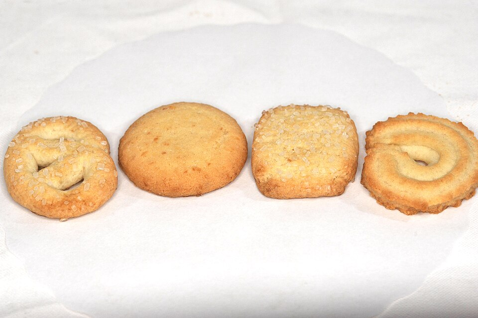

Doces
Biscoitos amanteigados

Ingredientes
- 100 g de manteiga
- 100 g de açúcar fino
- 300 g de farinha de trigo
- 1 ovo
- 1 colher (sobremesa) de fermento
Modo de preparo
- Em uma tigela, misture todos os ingredientes.
- Amasse até ficar homogênea; abra a massa e leve ao congelador por 30 minutos.
- Corte os biscoitos; se desejar, estampe com carimbo.
- Pré-aqueça o forno a 180 °C e asse por 15 minutos.